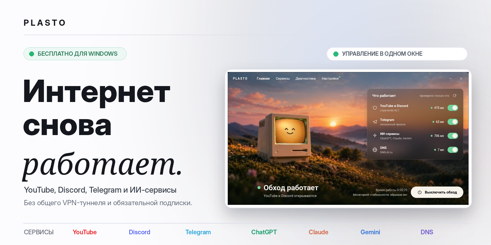
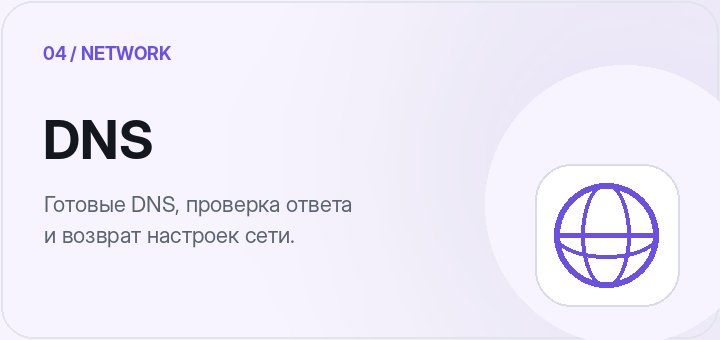
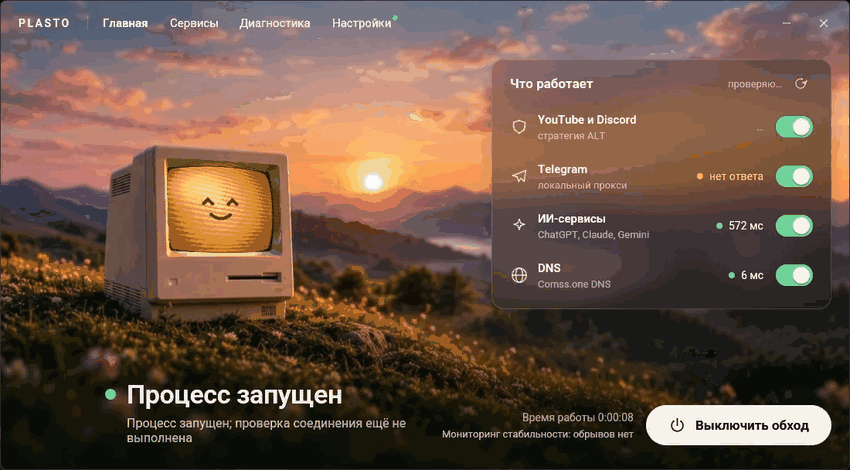
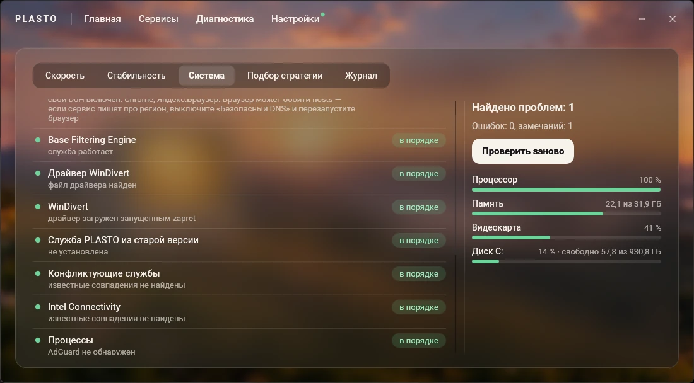
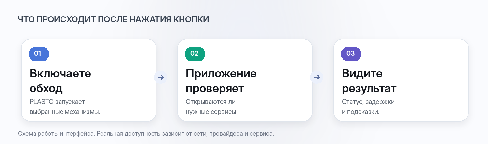
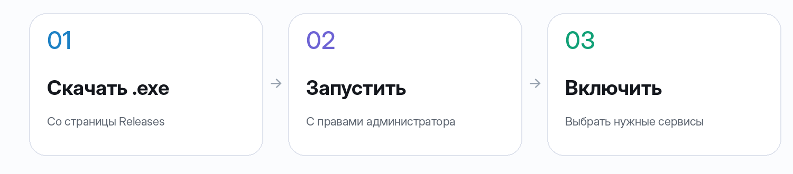

Windows 10/11 · x64 · Бесплатно · Один .exe-файл · Без обязательного VPN
Возможности · Скриншоты · Как работает · Скачать · Частые вопросы
Обход блокировок — не отдельная профессия
PLASTO — бесплатное приложение для Windows, которое помогает восстановить доступ к YouTube, Discord, Telegram, ChatGPT, Claude, Gemini и другим сервисам. Вместо нескольких отдельных инструментов — одно окно, одна главная кнопка и понятная проверка результата.
PLASTO объединяет локальный обход DPI-блокировок на основе zapret, прокси для Telegram и отдельных ИИ-платформ, настройки DNS, подбор рабочих стратегий и диагностику сети. Для локального DPI-обхода не требуется направлять весь интернет-трафик через единый VPN-сервер. Для некоторых сервисов приложение использует прокси — это отдельные механизмы, а не обещание полностью обходиться без них.
Возможности

И всё это управляется из одного интерфейса. Можно включать функции раздельно или пользоваться главным переключателем, который запускает выбранные механизмы. PLASTO показывает не просто состояние запущенного процесса, а результат проверки доступности сервисов.
Интерфейс
Никаких концептов и придуманных экранов — ниже скриншоты настоящего PLASTO.
Один взгляд — и понятно, что происходит

Два состояния интерфейса: запуск и успешная проверка. Анимация составлена из скриншотов, а не является записью работы в реальном времени.
Отдельное управление каждым сервисом

Выбирайте нужные сервисы, DNS-провайдеров и стратегии. Ненужные механизмы можно оставить выключенными.
Диагностика — не просто тест скорости


Проверяйте загрузку, отдачу, пинг, задержку под нагрузкой и джиттер. Отдельная диагностика ищет конфликты драйверов, служб, VPN, настроек DNS и системы. Мониторинг стабильности отслеживает обрывы и помогает подготовить отчёт для провайдера.
Настройки без ручного редактирования конфигов

Автозапуск, обновления, поведение при закрытии, папки компонентов и продвинутые параметры — там, где их можно найти.
Как это работает

В основе — несколько разных способов восстановления доступа, а не «одна волшебная технология»:
- DPI-обход изменяет обработку соединений с поддерживаемыми сайтами через
zapretи драйверWinDivert. PLASTO предлагает подбор подходящей стратегии. - Telegram-прокси работает как локальный компонент и подключается в Telegram по ссылке.
- ИИ-сервисы могут требовать двух отдельных действий: обхода ограничений провайдера и использования прокси для сервисов с региональными ограничениями.
- DNS позволяет выбрать альтернативный сервер, проверить его доступность и при необходимости вернуть системные настройки.
[!IMPORTANT] PLASTO не гарантирует доступ ко всем сервисам в любой сети. Эффективность обхода, задержка и скорость зависят от провайдера, региона, выбранной стратегии и используемого прокси. Скриншоты демонстрируют интерфейс приложения, а не результаты измерений вашего подключения.
Быстрый старт

- Скачайте файл
PLASTO.exeна странице GitHub Releases. Для запуска не нужен отдельный установщик. - Запустите с правами администратора. Они необходимы Windows для загрузки драйвера WinDivert, через который работает DPI-обход.
- Включите обход. При первом запуске PLASTO предложит подобрать рабочую стратегию. Вы можете оставить только нужные сервисы.
Базовые компоненты zapret включены в сборку — для их первоначального получения необязательно скачивать отдельный архив с GitHub.
Требования: Windows 10 или 11 (x64). Часть возможностей защищённого DNS доступна только в Windows 11.
Подробности для тех, кто любит контроль
Обход блокировок: стратегии, домены и игры
- Автоматический подбор стратегии по результатам проверок YouTube, Discord и других адресов; повторный подбор при проблемах.
- Ручной выбор и тестирование стратегии.
- Встроенная сборка
zapret-discord-youtube; возможность обновления компонентов. - Игровой фильтр с обработкой соответствующих портов и настройками для онлайн-игр.
- Добавление собственных доменов.
- Для опытных пользователей — выбор движка и просмотр/изменение команды запуска.
Telegram и ИИ: встроенные прокси и адресные настройки
Telegram: встроенный tg-ws-proxy-rs, подключение по ссылке, копирование прокси, возможность переключения на другую поддерживаемую реализацию.
ИИ-сервисы: ChatGPT, OpenAI API и Codex, Claude, Gemini, AI Studio, Google Labs, Grok, GitHub Copilot, Cursor, JetBrains AI, Perplexity, Hugging Face и другие. Доступность зависит от текущих ограничений каждого сервиса.
- Раздельные настройки обхода блокировки провайдера и регионального прокси.
- Проверка доступа к сервисам, обновление каталога прокси и возможность задать свой SNI-прокси.
- Дополнительный блоклист вредоносных и рекламных адресов.
- Резервная копия
hostsс возможностью восстановления исходного состояния.
DNS: выбор сервера, проверка и восстановление
- Готовые профили: DNS-AI.ru, xbox-dns.ru, Comss.one, dns.zapret.moe, dns.malw.link, GeoHide, CommonNet, Bezmezhau, а также Cloudflare и Google.
- Проверка времени ответа и доступности DNS.
- Добавление собственных DNS-адресов.
- Проверка выбранного DNS с возможностью автоматического переключения при отказе.
- Восстановление прежних DNS-настроек сети одной командой.
Диагностика: скорость, стабильность и система
- Тестирование загрузки, отдачи, пинга, джиттера и задержки под нагрузкой на российских и зарубежных серверах.
- Контроль соединения с интервалом около секунды, включая работу в трее.
- Анализ вероятного участка сбоя: Wi-Fi/кабель, маршрутизатор, провайдер или внешняя сеть.
- История обрывов и графики за разные периоды.
- Экспорт HTML-отчёта с временными отметками для обращения к провайдеру.
- Проверки системного прокси, защищённого DNS, файла
hosts, драйвера WinDivert и конфликтующих программ. - Сводка по процессору, памяти, видеокарте и накопителю.
- Просмотр журнала событий обхода.
Настройки, обновления и автозапуск
- Запуск вместе с Windows, сохранение набора включённых сервисов, работа в трее.
- Настройка звуков, поведения при закрытии и отображения окна поверх других.
- Обновление приложения,
zapretи Telegram-прокси из интерфейса. - Стабильный и бета-каналы обновлений; бета-сборки могут быть предварительными и не проходить ручную проверку.
- Выбор папки для компонентов с переносом уже скачанных файлов.
Частые вопросы
Это VPN?
Нет, PLASTO не создаёт обязательный общий VPN-туннель для всего трафика. Локальный DPI-обход выполняется на компьютере. Однако отдельные функции — в частности, доступ к Telegram и регионально ограниченным ИИ-сервисам — могут использовать прокси.
Почему нужны права администратора?
Windows требует повышенные права для операций с сетевым драйвером WinDivert. Без них механизм DPI-обхода не сможет запуститься.
Почему антивирус предупреждает о WinDivert?
WinDivert — инструмент перехвата сетевых пакетов, который может определяться защитным ПО как RiskTool. Само по себе такое название детекта не доказывает, что файл вредоносный, но и не гарантирует безопасность любой сборки. Скачивайте PLASTO из доверенного источника и проверяйте файлы; исключения в антивирусе добавляйте только после проверки.
Можно использовать с другими VPN и zapret?
Одновременный запуск другого zapret или VPN в режиме TUN может приводить к конфликтам обработки трафика. Рекомендуется сначала остановить конфликтующий инструмент и выполнить системную диагностику PLASTO.
Как полностью удалить PLASTO?
- Выключите обход.
- Если меняли
hostsили DNS, восстановите исходные параметры через соответствующие разделы приложения. - Отключите автозапуск в настройках.
- Завершите PLASTO через значок в трее, удалите исполняемый файл и папку
%AppData%\app.plasto.desktop(или выбранную вручную папку компонентов).
Открытые технологии и благодарности
PLASTO объединяет существующие технологии и инструменты. Благодарность авторам и сопровождающим проектам:
- zapret — bol-van, движок DPI-обхода.
- zapret-discord-youtube — Flowseal, готовые стратегии и сборка.
- tg-ws-proxy и tg-ws-proxy-rs — инструменты Telegram-прокси.
- dns.malw.link — каталог настроек прокси для ИИ-сервисов.
- Авторам DNS-проектов, доступных в настройках приложения.
В этом репозитории размещены сайт, описание приложения и готовые сборки в Releases. Исходный код приложения в эту публикацию не входит.
Проект и релизы: репозиторий PLASTO · Скачать PLASTO.exe · Сообщить о проблеме.
Интернет должен работать.
PLASTO · Бесплатное приложение для Windows · DPI-обход, Telegram-прокси, DNS и диагностика сети
Страница проекта: GitHub Pages · Дизайн и изображения README находятся в docs/assets/readme/